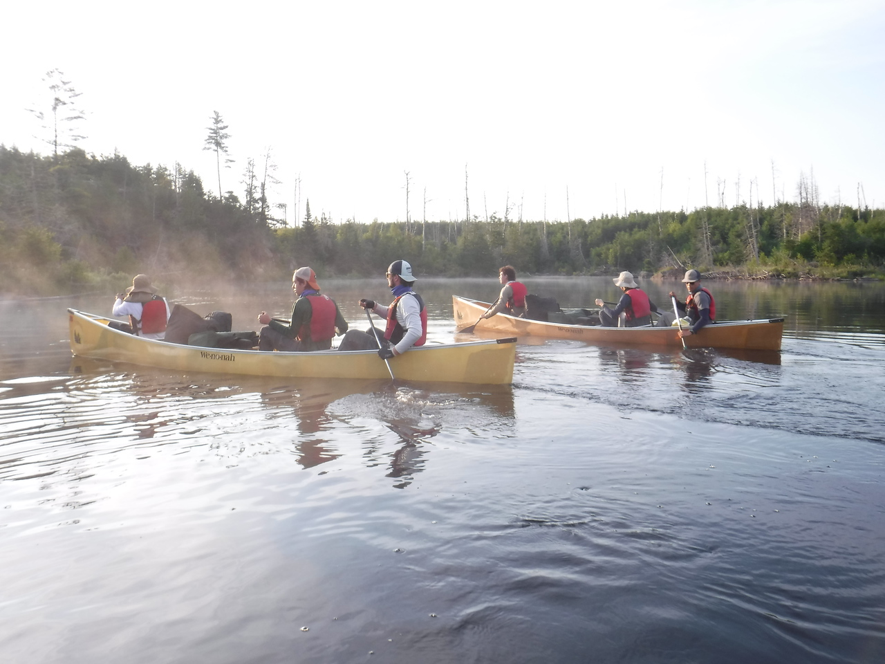

Camping with Troop 63
Preparing for Camping Trips and Outdoor Activities
Camping with Troop 63 is an exciting opportunity to immerse yourself in the great outdoors and develop essential life skills. Whether you're gearing up for a weekend campout or a week-long adventure, preparation is key to ensuring a successful and enjoyable experience.
1. Planning Your Trip
- Destination and Dates: Determine where you’ll be camping and the duration of the trip. Make sure to consider the weather conditions and local regulations for the area.
- Activities: Plan the activities you want to engage in, such as hiking, fishing, or campfire storytelling. This helps in deciding what gear and supplies you'll need.
- Safety and Permissions: Ensure you have the necessary permits and understand the safety protocols for the campsite.
2. Preparing Your Gear
- Tent and Shelter: Choose a tent that suits the number of campers and the expected weather conditions. Ensure it’s waterproof and has a good ventilation system.
- Sleeping Gear: Bring a sleeping bag appropriate for the temperature and a sleeping pad or air mattress for comfort.
- Cooking Equipment: Pack a portable stove or grill, cooking utensils, and food supplies. Don’t forget a cooler to keep perishables fresh.
Packing Lists
Packing smart is key to a successful camping trip. Here are packing lists tailored for summer and winter conditions:
Summer Camping Packing List
- Clothing: Lightweight, breathable clothing. Include moisture-wicking layers and a hat for sun protection.
- Footwear: Sturdy hiking boots or shoes suitable for various terrains.
- Camping Gear: A tent with good ventilation, a summer sleeping bag (rated for higher temperatures), and a lightweight sleeping pad.
- Additional Items: Sunscreen, insect repellent, a water bottle, and a first-aid kit.
Winter Camping Packing List
- Clothing: Layered clothing with thermal wear, waterproof and windproof outer layers, and insulated gloves and hat.
- Footwear: Insulated, waterproof boots with warm socks.
- Camping Gear: A four-season tent, a winter sleeping bag (rated for lower temperatures), and an insulated sleeping pad.
- Additional Items: Extra fuel for cooking, snow shovel, snow boots, and a headlamp with extra batteries.
Summer Camp with Troop 63
Summer camp with Troop 63 is a highlight of the year and an experience packed with fun and learning. The camp typically includes:
- Outdoor Adventures: Enjoy activities like hiking, swimming, canoeing, and rock climbing.
- Skill Development: Participate in skill-building sessions, including knot-tying, first aid, and survival techniques.
- Campfire Stories: Gather around the campfire for storytelling, sing-alongs, and bonding with fellow scouts.
- Team Building: Engage in team-building exercises that foster leadership and camaraderie among scouts.
Final Tips
- Stay Hydrated: Always carry enough water and drink regularly.
- Follow Leave No Trace Principles: Respect nature by cleaning up after yourself and minimizing your environmental impact.
- Be Prepared: Ensure you have a well-stocked first-aid kit and are familiar with emergency procedures.
Camping with Troop 63 provides valuable experiences that go beyond the campsite, teaching resilience, teamwork, and appreciation for nature. Enjoy your adventures and happy camping!